Структура - типа архитектурных стилкй, используемых в системе
(микросервисы, микро-ядро)
Свойства, то что поддерживается системой и описывается с
окончанием-ость
ничего общего с функциональными возможностями системы
доступность, надежность, гибкость
Решения, правила построения системы
из какого уровня доступ к БД
что можно, что нет
из-за какого условия конкретное архитектурное решение не может быть
реализовано
variance (отступление) - модели отступления, используемые
наблюдательным советом за архитектурой
architecture review board ARB)
Принципы, руководящая установка, а не строгие правила
пример, для повышения производительности нужно везде, где это
возможно применять асинхронный обмен сообщений между сервисами
выбор между REST или gRPC
Ожидание от работы
архитектора
Принятие архитектурных решение
решения и принципы проектирования для принятия технологических
решений внутри команды или всего предприятия
давать установку, не определять выбор
пример, не рекомендовать Reactjs, а рекомендовать использовать для
веб-разработки интерфейс реактивно-ориентированный
тем самым выбор между React, Vue, Angular
постоянный анализ архитектуры
современное следование последним тенденциям
Контроль за выполнением принятых решений
постоянная проверка, что разработчики следуют архитектурным
решениям
обладание обширными знаниями и опытом
не означает, что великим знатоком среды разработки, языка
расширять, а не углублять
Компетентность в нужной области бизнеса
типа бизнесовые дела, финансы, сделки
владение навыками межличностного общения
лидерские качества, управление людьми
Четкое понимание политики компании
Если архитектор полагает, что обнаружил нечто бескомпромиссное, то
скорее всего, компромисс еще не выявлен
Архитектурное мышление
Архитектура и
проектирование
Вопросы архитектуры
где заканчивается архитектура и где начинается проектирование?
каков обязанности архитектора? Что на разработчиках?
традиционная архитектура и проектирование
Архитектура - свойства, стили, структура
широта знаний
Разработчики - дизайн классов, пользовательский интерфейс, исходный
код
глубина знаний
треугольник-пирамида знаний
вершина
известные вещи, все знают и малая часть
середина
знаем, что не знаем, пробуем какую-либо технологию
низ
большая часть, не знаем, что не знаем - Озеро навыков!
это и есть широта знаний для архитектора
в пирамиде знаний высота одного шага есть глубина
ширина шага ест широта, где состоит из областей специализации
Архитектору следует сосредоточиться на технической широте, чтобы был
большой колчан знаний
Антипаттерн Замороженный
Троглодит
в каждой архитектуре неизменно возврат к своим излюбленным, но жуе
не обоснованным принципам
Анализ компромиссов
мыслить как архитектор - видеть компромиссы в каждом решении, и
анализировать, чтобы выбрать лучшее
Архитектура - это то, что невозможно загуглить
Нет верных решений или неверных, есть только компромиссы
Задавай вопрос: Что важнее расширяемость и безопасность? А те это
лучше потому что 1,2,3. Сравнивают решения
Архитектор должен и обязан уметь программировать, но он НЕ
разработчик
делегирование команде разработчиков
участвовать в PoC - Proof of Concept
проверка концепции - демонстрация чего-либо, метода, идеи,
технологи, с целью доказательства факта, что это работает
писать это максимально приближенно к бизнес-требованиям - это станет
образцом или примером
участвовать в техническом долге/устранении багов вместе с
разработчиками
создавать, настраивать анализаторы, автоматические задачи
с помощью средств архитектурного анализа и функциональной
пригодности, подтверждать жизнеспособность и соответствие архитектуры
предъявляемым требованиям
Код-ревью
Модульность
это принцип организации работы - компоновка
понятие модульность для описания логической компоновки
взаимосвязанного кода (группа классов либо функций)
Архитектор должен знать как разрабатывается/формируется
пакеты
степень модульности
связность - сцепление - cohesion
связАнность - coupling
коннасценция - consonance
Связность
это степень взаимосвязанности элементов модуля между
собой
функциональная связанность
все части модуля взаимосвязанны, а в модуле содержится все
необходимое для его выполнения
последовательная связность
выходные данные одного есть входные для другого
коммуникационная связность
каждый модуль производит действия над данными и вносит свой вклад в
результат
процедурная связность
два модуля выполняют код в определенном порядке
логическая связность
данные связаны не функционально, а логично
группировка утилит: математические, строки и т.д.
случайная связность
хаотично
Метрика
недостатка связности в методах LCOM
Chidamber and Kemerer Object-oriented metrics suite - структурная
связность модуля
LCOM - |P| - |Q|, если |P| > |Q|, 0 в противоположном случае
P - увеличивается на 1 для любого метода, не образающегося к конкретному совместному используемоему полю
Q - уменьшается на 1 для метода, который испоьзеут конкретное поле
чем выше LCOM - выше недостаток связности в методе (каждый
использует только свое)
чем ниже LCOM - тем больше поля и методы используются совместно -
это Хорошо
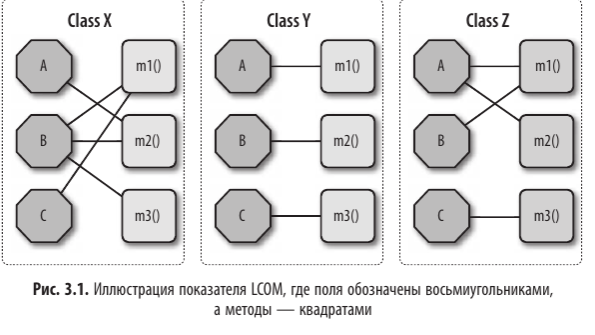
img.png
Связанность
афферентная - измеряется количеством входящих соединений с
элементами кода (компонент, класс)
эфферентная - измеряется количеством исходящих соединений с другими
фрагментами кода
Абстрактность
выражается отношением абстрактных элементов (классы, интерфейсы) к
конкретным реализациям
Нестабильность
отношение эфферентной связанность к сумме эфферентной и аффинерной
связанности
эта метрика определяет волатильность кодовой базы
чем выше Нестабильно, тем легче кодовая база ломается при внесении
изменений, т.к. у нее высокая степень связанности
Удаленность от
главной последовательности
D = A + I - 1
А - Абстрактность
I - нестабильность
они между 0 и 1
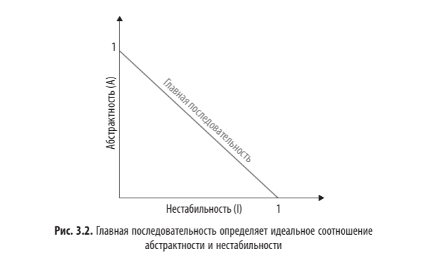
img_1.png
метрика Расстояние как идеальное соотношение абстрактности и
нестабильности
чем ближе к прямой тем лучше сбалансирован класс
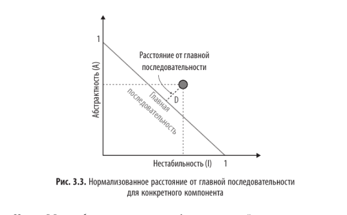
img_2.png
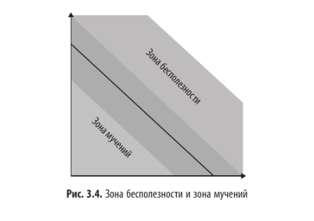
img_3.png
Коннасценция
это афферентная и эфферентная связанности и их адаптация под ООП
языки
Два компонента считаются коннасцентными если измения, внесенные в
один из них потребует модификации другого для поддержки общей
работоспособности
статическая
на уровне исходного кода
динамическая
анализирует выводы во время выполнения
Коннасценция является инструментом анализа для архитектора и
разработчиков, по следующим свойствам
Сила, с которой разработчик может сделать реффакторинг типа
связанности
Локальность, насколько близко друг к другу в коде находятся элементы
когда формы коннасценции, указывающие на слабую связанность,
относится к отдаленным элементам, это лучше чем,
когда они относятся близко
лучше один смысл у двух классов, чем один смысл в отдельных
компонентах
Степень, зависит от меры ее воздействия (ограниченное количество
классов)
чем меньше степень коннасценции, тем меньше ущерб
для улучшения
свести к минимуму коннасценцию за счет разбиения системы на
инкапсулированные элементы
минимизировать любу. коннасценцию, пересекающую границы
инкапсуляции
проблема Коннасценции
архитекторам свйосвтенно интересоваться тем, как именно связанны
модули, а не степенью связанности
т.е. сравнение синхронного обмена данных с асинхронным, чем как это
реализованно
коннасценция по сути не имеет никакого отношения к фундаментальным
решениям.
Основные свойства
архитектуры
Архитектор должен учитывать факторы при проектировании
проверяемость
производительность
безопасность
данные
масштабируемость
свойства архитектуры как строить, не зависит от функциональности
непредметный взгляд на проектирование
влияние на ряд структурных аспектов проектирования
вопросы безопасности
Список архитектурных
свойств
эксплуатационные
доступность
бесперебойность
восстанавливаемость
надежность, безопасность
масштабируемость
структурные
конфигуриемость
расширяемость
локализуемость (перевод)
сопровождаемость
переносимость
поддерживаемость
обновляемость
сквозные
доступность
аутенцифицируемость
архивируемость
конфиденциальность
всегда будет компромисс из свойств
больше безопасности меньше производительности
Выбор архитектурных свойств
архитектор выявляет архитектурные свойства на основе:
предметной области
требований
неявные особенности предметной области
обсуждая со стейкхолдерами - стремитесь к короткому списку
Антипаттерн: универсальная архитектура, поддерживающая все
свойства
не используй приоритет при расстановке свойств
выбери 3 основных
перевод задач с архитектурного языка на человеческий
слияние и поглощение -> масштибируемость и адаптивность
сроки выпуска -> гибкость, тестируемость, развертываемость
Медиатор блокируется, пока не сообщится о положительном
результате
Проблема при асинхронности
Плюсы:
Адаптируемость
Эволюционируемость
Модульность
Масштабируемость
Надежность
Минусы:
Сложность
Общие затраты
Выбор подходящего
архитектурного стиля
Все зависит от конкретных обстоятельств.
Влияние моды
Взгляд из прошлого
Изменения в экосистеме
Новые возможности, ускорения
Изменения в предметной области
Технологические изменения
Внешние факторы
Критерии принятия решений. Анализ факторов:
Предметная область
Архитектурные свойства, влияющие на структуру
Архитектура данных
Организационные факторы
Процессы разработки. Команда
Предметно-архитектурный изоморфизм
Архитектор должен ответить:
Монолит или распределенная архитектура
Где должны находиться данные
Стиль обмена между сервисами (синхронный или асинхронный)
По умолчанию — синхронный, асинхронный — по необходимости.
Технические приемы и
гибкие навыки
Soft Skills
Должны обладать каждый архитектор
Архитектурные решения
Антипаттерны
Антипаттерны — как нечто, что кажется хорошей идеей, но в итоге
приносит одни неприятности
Излишние пространства
Откладывание принятия решения из-за страха сделать неправильный
выбор
День сурка
Люди не понимают причины принятия решений и продолжают обсуждать
снова и снова
Отсутствие аргументов для принятия решения, при том что решение уже
предложено
Четыре распространенных бизнес-обоснования
Четыре распространенных бизнес-обоснования
Стоимость
Время вывода на рынок
Удовлетворенность
Стратегическое позиционирование
Архитектура, управляемая email-ами
Люди не понимают сути принятия решения, забывают и не знают о том,
что было принято
Отсутствие эффективной коммуникации
В письме говорили только тему решения, а само решение —
отдельно
Архитектурно значимое решение > Не всегда архитектурное
решение основано на какой-либо конкретной технологии — то это уже не
архитектура, а техническое решение. > Если технология решает какое-то
свойство — то это уже не архитектурное решение.
Нефункциональные свойства
Если выбор технологий влияет на производительность, а не на важный
аспект приложения — то это архитектурное решение
Интерфейсы доступа к сервису
API — синхронные и асинхронные шлюзы влияют на пользователя
Архитектурное решение
Запись архитектурных решений (ADR — Architecture Decision
Records)
Файл — 1–2 страницы с описанием спецификации архитектурных
решений
В основе — ASCII, Doc, Markdown
Структура ADR
Название (Title)
Статус
Контекст
Решение
Последствия
Дополнительно — соблюдение требований
Примечания
Альтернатива
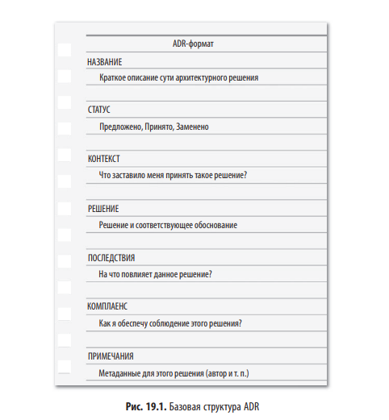
img_41.png
ADR имеет нумерацию, краткую фразу описания
Статус — предложен, принято, заменено
Запрос — комментарии, черновик для мнений
Контекст
Область, в которой принимается решение
Описывает ситуацию, проблему, сценарий и альтернативы
Решение
Архитектурное решение
Обоснование выбранной альтернативы
Последствия
Положительные
Отрицательные (потенциальные трудности)
Комментарии
Не обязательны
Содержат аргументы и пояснения
Утверждение
Автор
Дата принятия / корректировки
Ответственный за изменение
Хранение ADR
Простая и единая структура хранения
Пример каталогов
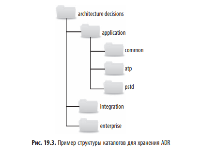
img_42.png
application - архитектурное решение определённому контексту
приложения
common (общие) - аля все классы
integration - обмен данными
enterprise - корпоративные архитектурные решения
пример ADR
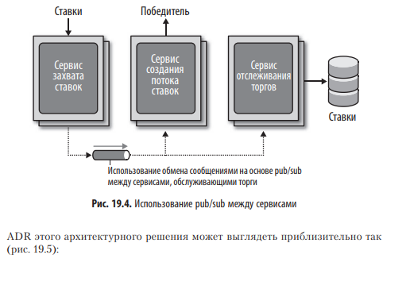
img_43.png
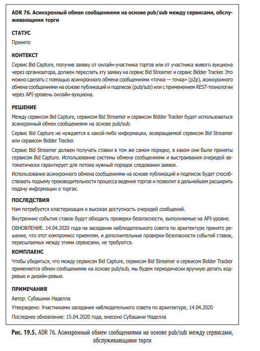
img_44.png
Анализ архитектурных риском
Матрица рисков
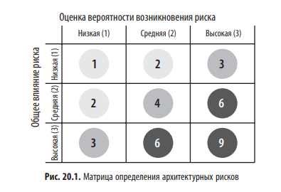
img_45.png
оценки - низкий, средний, высокий
пример выход БД из строя или потеря дает
влияние высокие (главное)
вероятность малая (второстепенность)
оценка рисков
сквозной отчет по пискам архитектуры с учетом контекста исходя из
Матрицы рисков
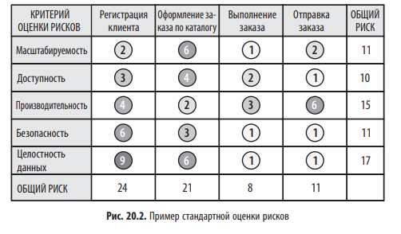
img_46.png
сложно отфильтровать н наиболее важные, убрав лишний шум
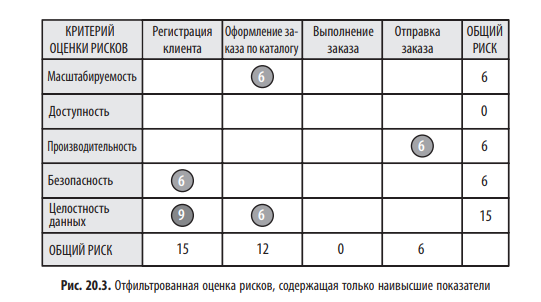
img_47.png
то есть убрать оценки до 6
можно добавить стратегии с цифрами
стрелка вниз типа ухудшение
верх улучшение
обе к какому значению идет
риск-штурм
совместная работа по выявлению архитектурных рисков, одному можно
что-то не увидеть
выявление, консенсус, снижение
выявление
в индивидуальном порядке
используя матрицу-рисков каждый участник проводит анализ
архитектуры
консенсус
выработка общего мнения всех участников
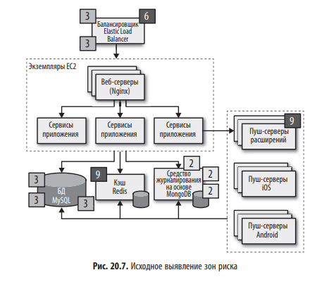
img_48.png
обозначение показателями участка диаграммы
Всегда ставь высокий риск для непроверенных или неизвестных для тебя
технологий
далее объективно если кто-то пользуется ею, то объяснит -> сузится
оценка
Архитектор берет архитектурные решения и оценивает, идет
согласовывать стоимость если не согласовывают, можно чуть упростить,
чтобы сбить стоимость
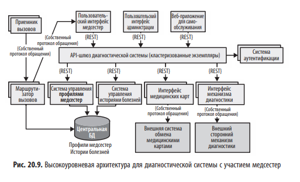
img_49.png
Составление
диаграмм и проведение презентация архитектуры
репрезентативная согласованность - принцип по которому следует
показывать взаимосвязь между частями архитектуры
например, сначала топология в целом, затем углубиться в структуру
плагинов
С
Контекст - весь контекст системы, роли пользователей и внешний
зависимости
Контейнер - физические границы и контейнеры внутри архитектуры
Компонент - отдельный компонент, более точный взгляд на системы
Класс - стиль как в UML
Нет ничего ужаснее диаграммы с неверным толкованием - это еще хуже,
чем отсутствие диаграммы
Презентация - это инструмент, умение управлять временем, а читатель
документа сам определит тему чтения
Эффективная команда
Команды, изолированные от архитекторов не получают нужного объема
сведений, не в состоянии реализовать архитектурные замыслы
архитектор выстраивает и доводит до команды ограничения (рамки) в
которых разработчик сможет заниматься реализацией архитектуры
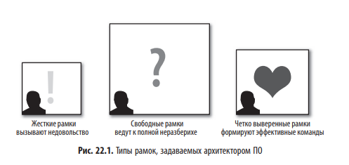
img_50.png
много ограничений - недовольство
слабы ограничения - команда берет на себя роль архитектора
личные качества
диктатор (жесткий)
кабинетный (свободные рамки)
эффективный
основные факторы успешного архитектора
слаженность команды (чем больше новичков в одной команде, тем более
контроля требуется)
численность от 4 до 12
совокупный опыт
сколько джунов, сениоров
чем больше сениоров тем Архитектор становится координатором
сложность проекта - чем сложнее тем Архитектор больше принимает
участие
продолжительность разработки проекта
меньше времени - меньше контроль
иначе не успеешь выработать требования
в зависимости от факторов можно применять разные типы - диктатор
+ кабинетный
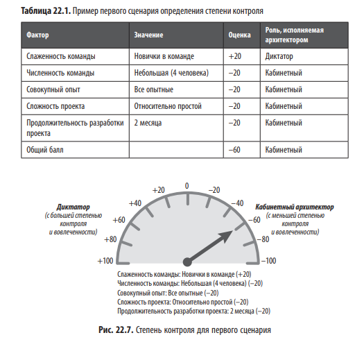
img_51.png
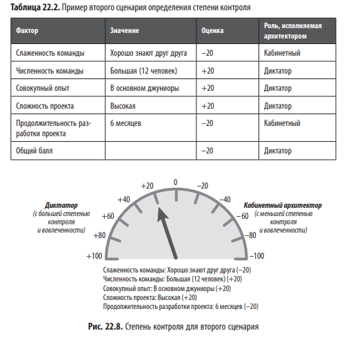
img_52.png
можно и нужно быть и немного диктатором и немного кабинетным
чем больше численность больше контроля
одни джуны - больше контроля(диктатор)
численность обуславливается тремя факторами
замещение процесса
разработчики затрагивают общие части
лучше меньше, чем больше и мешать друг другу
плюралистическое невежество
один считает, что Х-идея плохая, но боится сказать, ибо думает, что
его заплюют
пример, Голый Король, он ходил и спрашивал слуг как его наряд, они
боялись сказать. Только ребенок закричал: “Король голы”
размытость ответственности
чем больше команда - меньше общения, путаница в обязанностях
пример, человек стоит на обочине с открытым капотом: в деревне
каждый остановится и спросит, что случилось;
в городе народу много, никто не остановиться, ибо будут думать, что
уже кто-то вызвал помогайку
Чек-листы используются для независимых задач, а не для потока
задач (задача1-задача2)
ключевые чек-листы
завершение разработки кода
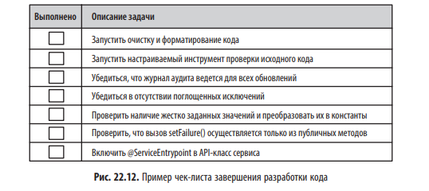
img_53.png
модульное и функциональное тестирование
диапазоны мин/макс значений
экстремальные сценарии
отсутствующие поля, спецсимволы
релиз ПО
изменения конфигурации серверов
библиотеки
Если пункт чек-листа можно автоматизировать - убираем из списка
выдача рекомендаций
используй сторонние библиотеки
img_54.png
Навыки лидерства видения
переговоров
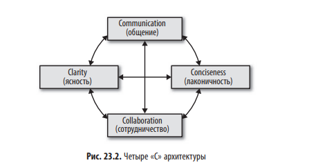
img_55.png
Дальновидный - планы, стратегии
Прагматичный - практик и реалистичные решения (не
теоретические)
ищем баланс между дальновидным и прагматическим
Звание и должность, когда речь заходит о лидерстве, практически
ничего не решают
Запоминай имена, используй их
Навязанные совещание
запросить зачем вызывают архитектора?
проверить запрос повестки совещания (темы)
назначай малое количество совещаний
установи повестку
время лучше - утро, после обеда (чтобы не в потоке)
находись всегда рядом с командой
Карьерный путь
ежедневно изучать актуальную информацию
Широта важнее глубины
правило 20 мину
Утром или в начале рабочего дня
уделять изучению нового материала не меньше 20 минут
Игнорировать развитие технологий можно только себе во вред
Сферы разработки ПО
инструменты
языки и фреймворки
технические примеры
платформы
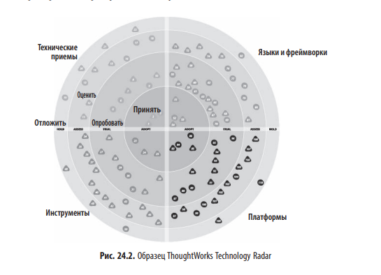
img_56.png
4 направления
отложить, оценить, опробовать, принять
суть для каждой сферы
img_56.png
много пробуем, оцениваем
некоторые (мало откладываем)
чуть больше, чем откладываем - Принимаем
Это касается не только разработки, но и всего - соцсети,
новости
Иметь свое портфолио технологий как финансовый портфель
Сильные связи с тем к которым часто встречаешься
слабые - раз в год
img_57.png
все время учитесь, все время практикуйтесь, а еще идите и займитесь
разработкой архитектуры